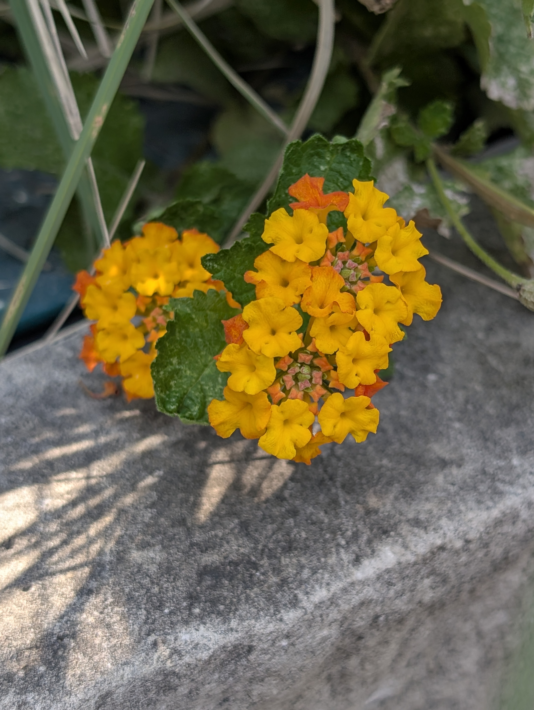
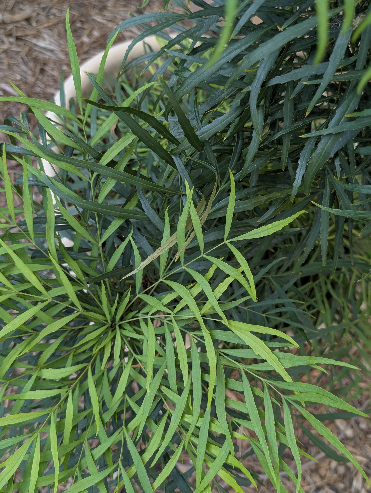
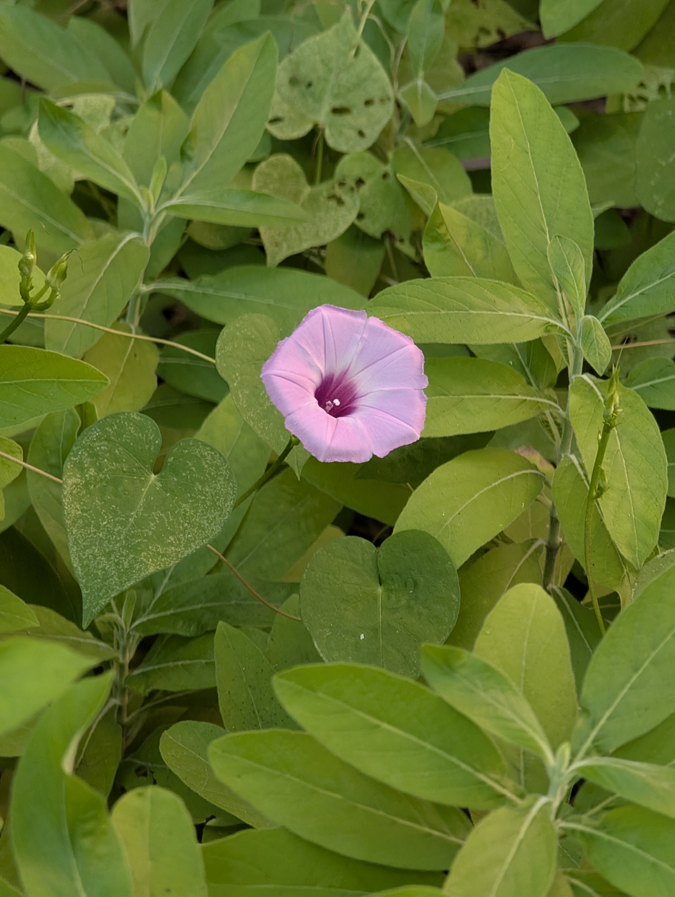
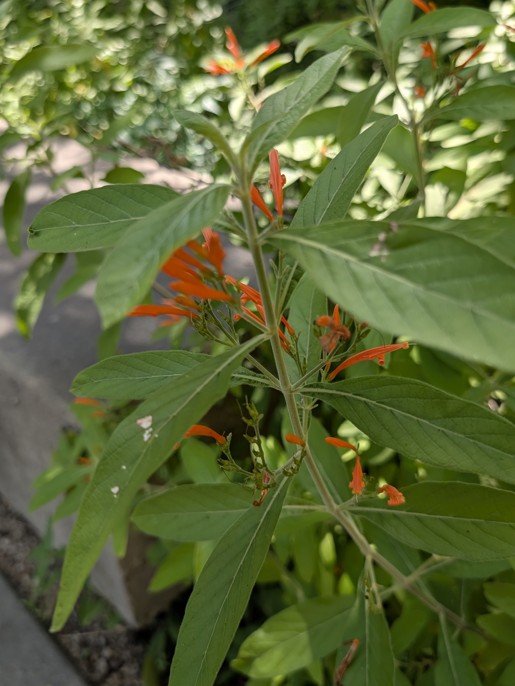
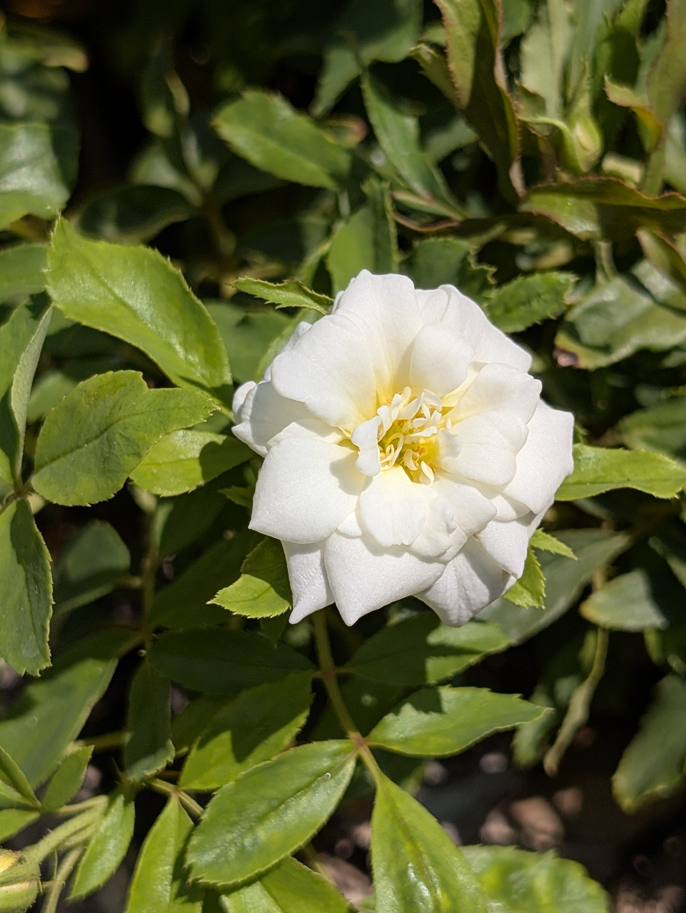
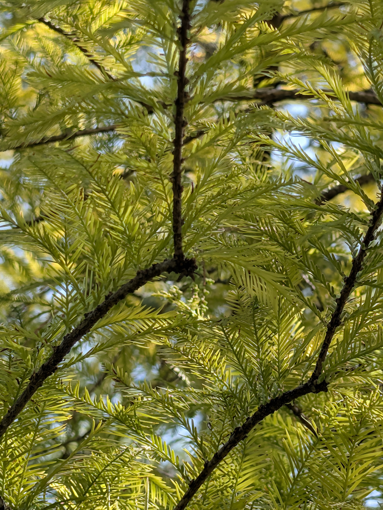

UTruffula
Ah! Where to begin? So many plants to spy! Let this Map be your guide as you wander nearby!
Map
Plant Data Viz









1. Lantana
2. Big Muhly
3. Moses-in-the-cradle
4. White Autumn Sage
5. Soft Caress Mahonia
6. Butterfly Vine
7. Purple Morning Glory
8. Muicle
9. Iceberg Rose
10. Bald Cypress